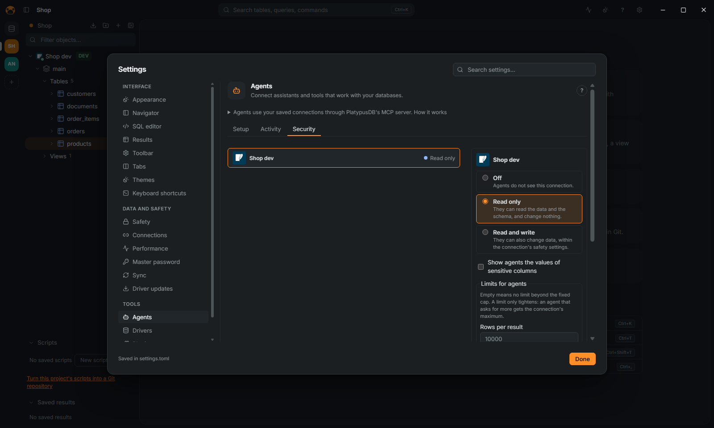

Docs / 通过代理使用 PlatypusDB
通过代理使用 PlatypusDB
Claude Code、Codex、Cursor 和其他 MCP 客户端可以通过 PlatypusDB 的 MCP 服务器使用你已保存的连接。本页是简短的路径；每个工具、限制和设置都在参考文档 AGENTS.md 中。
连接代理
- 打开设置（
Ctrl+,）› 代理 › 配置。 - 在列表中找到你的客户端（Claude Desktop、Claude Code、Codex、Cursor、Windsurf、Antigravity、Gemini CLI）。点击安装：应用会询问，在客户端文件旁保存一份副本，并把服务器写入其中。对于列表中没有的客户端，请在同一页面手动复制条目。
- 重启客户端。它会自己用
--mcp启动 PlatypusDB；不会打开窗口，读取时也不需要打开应用。
选择每个连接允许什么

- 设置 › 代理 › 安全列出你的连接。连接自己的表单在其外观与安全页面的代理下有同样的选择。
- 选择关闭、只读（默认）或读写。
生产连接和只读连接最多只能是只读：面板显示“不可用:生产连接和只读连接保持只读。”来自共享项目的新连接，在你的电脑上起初是关闭。
限制和遮蔽
- 在安全中，代理的限制可以按连接限制结果或语句的行数、字节数和秒数、每分钟的调用次数，以及读取操作的预估行数或计划成本；超过时，该读取会被拒绝并附上其计划。留空表示除固定上限外没有限制。
- 敏感列对代理显示为
••••••，与遮蔽时的表格相同。在连接上勾选向代理显示敏感列的值即可显示它们。见安全。
更改等待你的决定
在读写连接上，代理想运行的每处更改都会在应用中打开一个对话框，显示语句（使用编辑器的颜色，在 SQL 数据库上排好版；显示智能体发送的原文会逐字显示将要运行的文本）、数据库预计会修改的行及其计划。点击拒绝（代理会读到你的理由）、允许一次或本次会话内允许。五分钟没有回答则视为拒绝，应用关闭时这些更改也会被拒绝。设置 › 安全 › 代理更改数据前先询问可以关闭这些询问。
代理还可以在不运行任何内容的情况下提议：
- 用
propose_sql提议 SQL：它会在新的编辑器标签页中打开，供你阅读和运行。 - 用
propose_edits提议要插入、更新或删除的行：表会在其数据查看器中打开，这些行作为待保存的更改，供你保存或丢弃（见编辑数据）。
查看代理做了什么
设置 › 代理 › 活动按会话列出每一次工具调用，带过滤器和导出 CSV。它们的查询在历史中以代理的名字记录。
列表上方的按代理和会话汇总（默认折叠，展开后可见）汇总过滤器所选的调用：每个代理一行，其下每个会话一行，包含时间段、调用次数、读取的表、返回的行、允许的更改、拒绝的更改和错误。导出 Markdown 和导出 HTML 把它保存为可共享的文档；HTML 是单个文件，没有脚本，也不从外部加载任何内容。
- 会话是 MCP 服务器的一次启动，如日志所记录（连续连接数天的客户端算一个会话）。
- 更改是修改数据或模式的语句。运行了就算允许，如果连接的访问权限、某项安全设置或你在应用中的回答说了不行，就算拒绝。因其他原因失败的语句只计为错误。
- 读取的表对
sample_rows和profile_table以及query_across_databases的数据源是精确的，对语句则是估算：即FROM和JOIN之后列出的表。非 SQL 的数据库所用的语句（MongoDB、Redis、Elasticsearch、Cassandra）不会指出任何表。 - 只保留名称和数量：不含任何值，语句也像在日志中一样保持遮蔽。
- 在记录这些数字的版本之前发出的调用显示为 –，绝不是 0；其他数字只统计有这些数字的调用，汇总中会这样说明。
不起作用时
见故障排除。